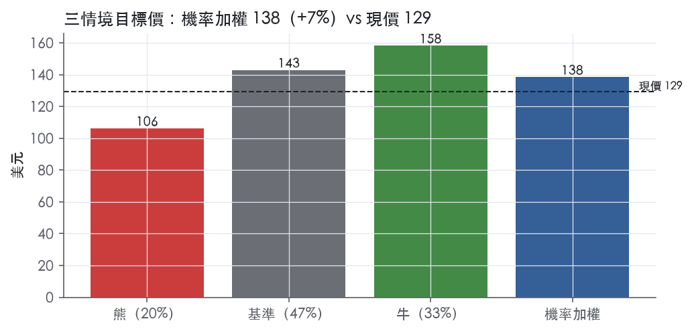
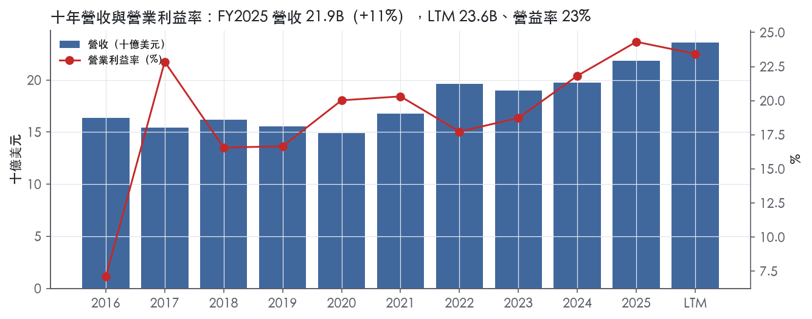
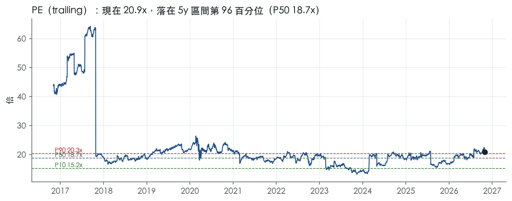
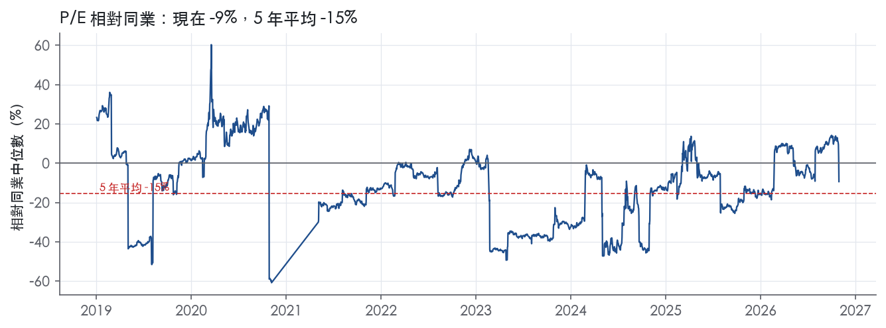
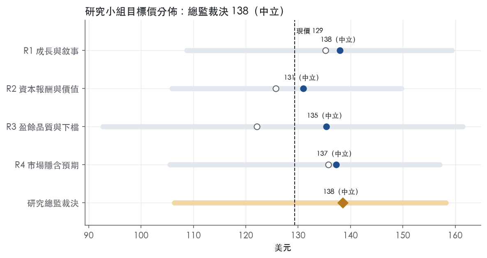
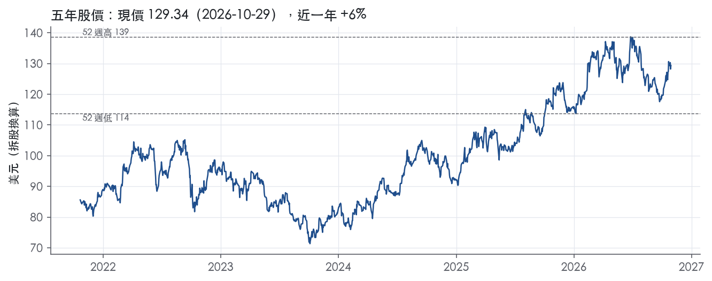

評等總表 › 公用事業 › AEP
盈餘沿指引上修，倍數持平，看多｜評等 中立｜目標價 138
| 報告日 | 評等 | 目標價 | 當時股價 | 超額報酬 |
|---|---|---|---|---|
| 2026-10-29 | 中立 | 138 | 129 | +1.4% |
| 2026-10-09 | 中立 | 131 | 123 | +0.6% |
| 快評 | 動作 | 結論 |
|---|---|---|
| 2026-10-28 | 提前重開研究小組 | EPS 比預測高 33%，轉多條件已近 |
| 評等 | 中立 |
| 12 個月目標價 | 138 美元 |
| 現價 | 129.34 美元（2026-10-29） |
| 預期報酬 | 股價 +7.1%＋股息 2.9%＝總報酬 +10.0%；同業籃門檻 8.6%，超額 +1.4% |
| 估值方法 | P/E 19.5x，套在第 5–8 季的EPS（也就是一年後的未來四季） |
| 三情境 | 熊 106／基準 143／牛 158 |
| 研究流程 | 四位研究員兩輪辯論＋研究總監裁決 |
| 資料來源 | SEC EDGAR XBRL、Tiingo、FRED（全免費） |
盈餘沿指引上修，倍數持平，看多（研究總監裁決，四位研究員兩輪辯論後）
評等 中立｜12 個月目標價 138 美元（總監三情境機率加權 141 與研究員中位數 136 各半）｜現價 129.34（2026-10-29）
預期報酬：股價 +7.1%＋股息 2.9%＝總報酬 +10.0%。同業籃門檻 8.6%，超額 +1.4%。
估值方法：P/E 19.5x，套在第 5–8 季的EPS（也就是一年後的未來四季）。三情境：熊 106（20%）／基準 143（47%）／牛 158（33%）。
立場看多而評等中立：評等看的是「預期總報酬 10.0% − 同業籃門檻 8.6%」＝超額 1.4%，不是絕對漲跌；看多但超額不足，代表上檔已被同業的預期報酬抵銷。
什麼會讓研究總監改變看法：2027-02 融資計畫若使股數年增逾 3.5%，或核心州 ROE 裁定低於 9.25%，倍數回 18x、轉中性；融資以證券化與資產出售為主且 2027 指引上調，倍數上看 20.5x。
| 過去四季（實際，FY2026Q3） | 未來四季 | 第 5–8 季 | 第 9–12 季 | |
|---|---|---|---|---|
| 營收（B） | 23.6B | 25.8B | 28.0B | 30.3B |
| 營收成長 | 11.1% | 9.4% | 8.5% | 8.0% |
| 營業利益率 | 23.4% | 25.0% | 25.2% | 25.3% |
| EPS（美元） | 6.19 | 6.56 | 7.33 | 8.04 |
| EPS 成長 | -9.7% | 6.1% | 11.7% | 9.7% |
| 每股股息（美元） | 3.80 | 3.80 | 3.80 | 3.80 |
| P/E（現價） | 20.9x | 19.7x | 17.6x | 16.1x |
| 股息殖利率（現價） | 2.9% | 2.9% | 2.9% | 2.9% |
過去四季為申報數字；預測為研究總監的假設、程式計算。倍數與殖利率都用現價計算，用來看現價對應各期獲利的高低。
| 項目 | 上次（2026-10-13） | 這次（2026-10-30） | 變動 |
|---|---|---|---|
| 評等 | 中立 | 中立 | ＝ |
| 機率加權目標價（美元） | 131 | 138 | +5.7% |
| 超額報酬 | 0.6% | 1.4% | +0.7 pp |
| 目標倍數 | 19.0x | 19.5x | — |
| 未來四季營收成長 | 8.8% | 9.4% | +0.5 pp |
| 未來四季營益率 | 25.0% | 25.0% | +0.0 pp |
| 未來四季 EPS（美元） | 6.41 | 6.56 | +2.5% |
| 熊／基準／牛機率 | 19／46／35 | 20／47／33 | — |
程式計算；「未來四季」各自從當次報告的資料起點算。研究總監逐點說明見第八章「與上次報告比較」。
| 情境 | 機率（歷史） | 故事 | 未來四季營收成長 | 第 5–8 季營益率 | 倍數 | 目標價 | 股價漲跌 |
|---|---|---|---|---|---|---|---|
| 熊 | 20%（17%） | 風險表第 1 條核心州 ROE 低於 9.25%、不予認列擴大，疊加第 3 條折價增發，第 2 條次之；成長溢價拆除，倍數回帶 P50–P75 | 7.5% | 23.0% | 18.0x | 106 | -17.8% |
| 基準 | 47%（45%） | GAAP EPS 走到 2027 指引下半部與 2028 指引下緣扣 GAAP 調節，市場對校準後 EPS 的前瞻倍數持平，報酬來自盈餘成長與股息 | 9.4% | 25.2% | 19.5x | 143 | 10.5% |
| 牛 | 33%（37%） | FY2026 超 6.55、2027 落在指引中點以上，融資以 DOE 貸款、證券化與資產出售為主，受管制同業同步重評，倍數劇本 +1x | 9.4% | 25.5% | 20.5x | 158 | 22.3% |
目標價由程式依研究總監的驅動與倍數計算；機率由研究總監給定。括號內是歷史頻率：把這檔股票過去十年 12 個月報酬的波動形狀，置中在基準情境，結果落在各情境附近的比例。

四位研究員用不同方法各自估值，回應研究總監的質疑後交出第二輪，最後由總監逐點裁決。各研究員的主張見第七章，裁決理由見第八章，完整論證見《研究底稿》。
| 立場（一輪→二輪） | 加權目標價（一輪→二輪） | 評等（一輪→二輪） | 第二輪倍數 | 熊～牛目標價 | |
|---|---|---|---|---|---|
| R1 成長與敘事 | 中性→中性 | 135→138 | 中立→中立 | 20.9x | 109～159 |
| R2 資本報酬與價值 | 看空→看空 | 126→131 | 減碼→中立 | 20.0x | 106～150 |
| R3 盈餘品質與下檔 | 中性→中性 | 122→135 | 減碼→中立 | 18.5x | 93～161 |
| R4 市場隱含預期 | 中性→中性 | 136→137 | 中立→中立 | 19.5x | 106～157 |
| 研究總監裁決 | 看多 | 138 | 中立 | 19.5x | 106～158 |
目標價由程式依各自的驅動與倍數計算；評等＝機率加權總報酬 − 同業籃門檻。
AEP 是一家垂直整合的電力控股公司，透過旗下公用事業子公司在美國 11 個州從事發電、輸電與配電業務。AEP 是一家公用事業控股公司，直接持有旗下公用事業子公司全部已發行普通股¹。其公用事業子公司的服務範圍涵蓋 Arkansas、Indiana、Kentucky、Louisiana、Michigan、Ohio、Oklahoma、Tennessee、Texas、Virginia 與 West Virginia 等州的部分地區¹。客戶端以受監管的零售用電戶為主，同時對外批售電力給其他電力公司、農電合作社與市政單位¹。近年公司業務組合明顯向大型用電戶（hyperscaler、數據中心、工業客戶）傾斜，這些客戶的用電合約成為公司資本支出擴張的主要驅動力。截至 2025 年底 AEP 子公司共有 17,581 名員工，AEP 本身作為控股公司不直接僱用員工¹。
AEP 以四個可報告分部營運：垂直整合公用事業（Vertically Integrated Utilities）、輸配電公用事業（Transmission and Distribution Utilities）、AEP Transmission Holdco、以及發電與行銷（Generation & Marketing）¹。垂直整合公用事業透過 AEGCo、APCo、I&M、KGPCo、KPCo、PSO、SWEPCo 與 WPCo 從事發電、輸電與配電，截至 2025 年底擁有約 25,400 MW 發電容量¹；燃料結構以煤與褐煤（43%）、天然氣（22%）、核能（19%）、再生能源（16%）為主¹。輸配電公用事業由 AEP Texas 與 OPCo 組成，專注輸配電服務，不涉及發電¹。AEP Transmission Holdco 是美國最大的輸電資產擁有與營運商之一，截至 2025 年底 State Transcos 已有在役輸電及其他資產 17.1B 美元（不含在建工程），並計劃到 2030 年再興建約 11.6B 美元的輸電資產¹；此分部另含多個聯合開發的輸電合資企業，如 ETT（ERCOT，持股 50%）、Transource Energy（持股 86.5%）、Valley Link（持股 31.1%）等¹。發電與行銷分部主要從事零售供電業務（AEP Energy，截至 2025 年底約 922,342 個客戶帳戶）與批發能源交易行銷業務¹。從 3Q26 GAAP 獲利佔比看，垂直整合公用事業貢獻最大（697M，YTD 1,443M），輸配電（284M，YTD 743M）與輸電控股（219M，YTD 653M）次之，發電與行銷規模最小但成長最快（96M，YTD 268M）²。各分部具體對集團營收的百分比貢獻，10-K 未揭露。
AEP 服務約 560 萬客戶，涵蓋美國 11 個州，是全美最大的輸電系統業者，擁有約 4 萬英里輸電線路與逾 25.3 萬英里配電線路²。AEP 服務的主要產業包括石化製品製造、化學製造、油氣開採、管線運輸、初級金屬製造，以及資料處理（主要為數據中心與加密貨幣運算）¹。批發電力市場客戶包括其他電力公司、農電合作社與市政單位¹。零售供電子公司 AEP Energy 在 Illinois、Pennsylvania、Delaware、Maryland、New Jersey、Ohio 與華盛頓特區提供電力及天然氣¹。地區監管上，各州費率皆採用成本加成（cost-of-service）核定，各子公司在所屬司法管轄區有不同的授權股東權益報酬率（ROE），從 9.25% 至 10.50% 不等¹。近期大型用電戶（hyperscaler、數據中心、工業客戶）成長快速，公司已將新增合約負載（incremental contracted load）目標上調至 2031 年 84 GW²，顯示客戶結構正快速向高用電密度產業集中。
FY2025Q4 營收 5.32B 美元，年增 13.2%，GAAP EPS 1.13（dv 系列）【判，引用資料包 fact id：／】。FY2026Q1 營收 6.02B 美元，年增 10.2%，EPS 1.60（／）。2Q26 GAAP 獲利 713M 美元或每股 1.31 美元，較 2025 年同期 GAAP 獲利 1,226M 美元或每股 2.29 美元下滑，主因 2025 年輸電少數股權出售及稅務項目時點差異；營運獲利（non-GAAP）742M 美元或每股 1.36 美元，與去年同期 766M 美元或每股 1.43 美元相近³。公司將 2026 全年營運獲利指引上調至每股 6.25 至 6.55 美元，原指引為每股 6.15 至 6.45 美元³。3Q26 GAAP 獲利 1,187M 美元或每股 2.18 美元，較 2025 年同期 972M 美元或每股 1.82 美元成長；營運獲利 1,216M 美元或每股 2.23 美元，優於去年同期 963M 美元或每股 1.80 美元²。公司預期 2026 全年營運每股獲利將達到或超過 6.25 至 6.55 美元指引區間的高端²。整體趨勢是營收與營益率同步走強（FY2026Q3 營益率 26.5%，為近八季次高），反映大型用電戶合約及輸電資產成長挹注。
公司將成長引擎定位於加速的用電需求帶動的基礎設施投資機會：AEP 宣布擴大五年資本計畫至 100B 美元，支撐 2031 年前超過 13% 的費率基礎年複合成長率²。公司並新提出 2027 至 2031 年每年營運每股獲利成長 9% 至 11%，到 2031 年營運每股獲利複合成長率超過 10%²。公司計劃在輸電資產投入約 37B 美元，使輸電費率基礎接近倍增至近 70B 美元；另投資 36B 美元於發電資源，以及約 22B 美元於配電，用於提升電網可靠度與韌性²。2025 年第三季新增 15 GW 新負載承諾，使累計合約負載成長目標至 2031 年達 84 GW²。公司強調成長與可負擔性並重：完全執行的「take-or-pay」大型用電合約預期為現有住宅客戶帶來最高 21B 美元的固定成本抵減，高於上季的 16B 美元²。CEO Fehrman 表示：「AEP 正從實力的位置進入下一階段成長」²。整體而言，AEP 的故事是用大型用電戶（數據中心、hyperscaler）的新增負載去攤提系統固定成本，一方面支撐資本支出與費率基礎的高速擴張，一方面維持既有住宅客戶電價可負擔性，形成「成長養成長」的敘事。這個敘事能否兌現，高度依賴新增合約負載是否如期轉為實際用電量，以及各州監管機構是否持續核准相應費率回收機制。考慮到目前 P/E 已處於過去五年 95.9% 分位、EV/Sales 處於 88.2% 分位，市場顯然已部分反映此成長故事，後續股價表現將更依賴執行力而非故事本身。

AEP 的護城河是「受監管的獨占特許經營權＋輸配電網路的效率規模」，評級為窄，趨勢穩定。這條護城河保證的是「有權利賺到核准報酬率」，不是「賺到超額報酬」，監管機制本身就壓住了超額報酬的上限。量化底稿用的資本成本代理值顯示，過去沒有任何一年 ROIC 高於資本成本，因此這個評級有前提條件；下方「數字上看得到嗎」一節完整交代這個衝突。
無形資產（特許經營權）是第一道護城河，在 AEP 的服務區內直接排除了同業競爭。原文指出，除了 AEGCo 之外，垂直整合公用事業持有的特許經營權或其他權利，實質上賦予它們在服務區內各市鎮與地區提供電力服務的獨占能力¹。這些售電依各州公用事業委員會核准的費率進行，不受其他垂直整合公用事業的競爭¹。各州核准的股東權益報酬率介於 9.25% 至 10.50%，FERC 輸電部分為 9.85% 至 10.50%¹。
效率規模是第二道護城河，輸電網路屬於自然獨占，同一區域不需要也容不下第二張網。截至 2025 年底，State Transcos 已有在役輸電及其他資產 $17.1 billion（不含在建工程），並計畫到 2030 年再興建約 $11.6 billion 的輸電資產¹。輸電費率依 FERC 核准的前瞻式公式費率每年重設，並含前一年度多收或少收的追補機制¹。燃料成本則透過各州的燃料調整條款轉嫁，原文稱這些條款「對燃料成本變動提供保護」¹。
數字證明 AEP 的報酬「穩」，但沒有證明它有「超額」報酬，這是本章最大的衝突。
ROIC 十年平均 5.9%，標準差只有 0.4%，區間 5.3% 至 6.8%，穩定度符合受保護特許經營權的特徵。ROE 十年平均 10.7%，標準差 1.0%，最低 9.0%，落在核准 ROE 區間的上緣附近，代表公司能把監管授予的報酬實際賺到手。
衝突在於：程式的資本成本代理值為 10.1%，ROIC 平均減資本成本為 -4.2%，有資料的 9 年中高於資本成本的年數是 0 年。若照字面套用評級標準，AEP 只能評為無。我仍維持窄，理由是「10 年債加 5%」這個代理值是為一般競爭性企業設計的，並不適用於高槓桿、低 beta、報酬率由監管機關核定的公用事業。監管機關核准的 ROE 本身就是官方認定的權益資本成本，而 AEP 的實際 ROE 長期達到或略高於這個水準。
營業利益率十年平均 18.6%，標準差 4.5%，最低 7.1%，波動明顯大於 ROIC。這個波動來自燃料轉嫁造成的營收分母變動與個別年度的一次性項目，不代表定價權受損。FCF 利潤率從十年平均 26.0% 降到最新的 16.0%，反映資本支出加速，屬於費率基礎擴張的代價，不是護城河受侵蝕。
最大的風險來自監管端，不是來自競爭對手。
建設期間的監管遲延會拉低實際報酬，管理層正爭取預先核准、在建工程報酬、附加費率與公式費率等機制來縮短遲延¹。Texas HB 5247 建立的 UTM 把三種回收機制合併為單一年度申報，屬於正面變化¹。
負面變化則有兩項。第一，淨負債已達 53.75B 美元，10 年期公債殖利率為 5.05，利率走高時，固定的核准 ROE 與市場要求報酬之間的距離會被壓縮。第二，用電需求向數據中心集中，若住宅電價可負擔性惡化，監管機關下修 ROE 的政治壓力會升高。正負因素相抵，趨勢判為穩定。
目標倍數相對受監管電力同業應持平，不給護城河溢價。AEP 的特許經營權保證的是賺到核准報酬，而非超額報酬，所以價值成長完全取決於費率基礎擴張的速度，以及 ROE 能否維持在核准水準。現在 P/E 20.9x（資料包快照）已高於 5 年 P90 的 20.3x，任何高於同業的倍數都必須由費率基礎成長的執行力來支撐，不能用護城河來辯護。
| 指標 | 最新 | 十年平均 | 標準差 | 最低 | 最高 |
|---|---|---|---|---|---|
| ROIC | 6.8% | 5.9% | 0.4% | 5.3% | 6.8% |
| 營業利益率 | 24.3% | 18.6% | 4.5% | 7.1% | 24.3% |
| FCF 利潤率 | 16.0% | 26.0% | 5.1% | 16.0% | 32.5% |
| ROE | 12.7% | 10.7% | 1.0% | 9.0% | 12.7% |
程式計算。資本成本代理值（10 年債＋5%）：10.1%；ROIC 平均減資本成本：-4.2%；ROIC 有資料的 9 年中，高於資本成本 0 年。
AEP 的營業現金流／淨利 LTM 2.18x、應計比率 -3.3%，顯示盈餘有紮實的現金支撐，不是靠會計手法做出來的。但淨負債／EBITDA 近三年平均 6.05x、利息保障倍數 LTM 2.43x 都落在紅燈區，且公司剛宣布擴大後的五年資本計畫達 100B 美元，2031 年 rate base 要衝到 162B 美元²，槓桿只會繼續墊高，這是真實限制而非一次性雜訊。
現金是跟上的。LTM 營業現金流／淨利 2.18x、近三年平均 2.14x、十年平均 2.65x，三個時間窗都遠高於 1.00x 的綠燈門檻。自由現金流／淨利 LTM 0.98x、近三年平均 1.76x，仍站在綠燈。應計比率連續為負（LTM -3.3%、近三年 -3.3%、十年 -3.2%），代表淨利長期低於或貼近現金流，不存在靠應計堆高盈餘的跡象。應收帳款成長減營收成長 FY2025 為 -2.0pp，營運資金沒有在吃盈餘。這點符合受監管公用事業的典型現金體質：燃料成本有追蹤機制可回收，不靠應計堆帳¹。
3Q26 GAAP EPS 2.18 美元，operating（非 GAAP）EPS 2.23 美元，差距 0.05 美元²。YTD GAAP EPS 5.10 美元 vs operating EPS 5.24 美元，差距擴大到 0.14 美元，且方向相反——GAAP 年增率是負的（YTD25 5.61 → YTD26 5.10），operating 年增率是正的（YTD25 4.78 → YTD26 5.24）²。2026 全年 GAAP EPS 導引區間 6.11–6.41 美元 vs operating 導引 6.25–6.55 美元，拉開的調整項包括：商品避險的 mark-to-market 影響 0.06 美元、WVPSC 裁決影響 -0.06 美元、Pirkey 電廠部分不予認列 0.06 美元、Unified Tracker Mechanism 部分不予認列 0.04 美元、批發客戶合約協議 0.08 美元、所得稅效果 -0.04 美元²。我認為 mark-to-market 避險調整和所得稅效果屬於會計口徑波動，可以剔除；但 Pirkey 電廠不予認列與 Unified Tracker Mechanism 不予認列是監管機關拒絕回收的資本成本，本質上是真實的經濟損失，不是一次性雜訊，長期若持續發生會壓縮未來核定費率基礎的回收率。公司自己也承認「operating earnings exclude certain gains and losses... not indicative of ongoing performance」但同時說明無法為未來期間預測這些項目²，顯示這類監管不予認列會反覆出現，估值不該全部加回。
槓桿是全篇最大的隱憂。淨負債／EBITDA 近三年平均 6.05x、十年平均 5.94x，遠高於 3.00x 的紅燈門檻，且公司 2025 年底淨負債已達 48.41B 美元、較 FY2016 的 21.62B 美元翻了超過一倍（資料包年度表）。利息保障倍數 LTM 2.43x、近三年平均 2.30x，低於 3.00x 紅線，代表營業利益覆蓋利息支出的餘裕薄。這不是意外：公司正在執行 100B 美元五年資本計畫，目標 13% 以上的 rate base 複合成長率到 2031 年，且公開表示「proceeds from the sale of tax credits and anticipated securitizations」是資金來源之一⁴，顯示公司預期持續靠外部融資和稅額抵免銷售撐資本支出，而非單靠自有現金流。股東回饋（股利＋回購）／淨利 LTM 59.5%、近三年 65.8%，低於十年平均 77.3%，顯示公司把更多現金留在內部支應資本計畫而非回饋股東，這點與高資本支出周期一致，屬合理配置。稀釋股數年變動 LTM -0.1%，基本持平，沒有明顯稀釋。
淨負債／EBITDA 紅燈（近三年平均 6.05x）：真問題，非一次性。公用事業本質上高槓桿，監管資產有穩定現金流支撐較高倍數是正常（受監管公用事業 formula rate 與 fuel adjustment clause 提供回收確定性¹），但 6x 已經偏高，且公司明確計劃未來五年再投入 100B 美元資本支出、rate base 目標翻倍到 162B 美元²，槓桿不會在可見未來下降，是結構性而非短期現象。
利息保障倍數紅燈（LTM 2.43x，近三年 2.30x）：真問題，與槓桿紅燈同源，非會計口徑假警報。公司信用協議對 debt-to-total capitalization 有最高限制測試，且 2025 年底公司確認符合所有債務承諾條款（AEP was in compliance with its debt covenants）¹，顯示目前尚未觸及契約限制，但利息保障餘裕薄，若融資成本上升（10 年期美債殖利率已達 5.05%）會進一步壓縮覆蓋率，需要持續觀察評等機構動作（Actions of rating agencies... impacting the cost of debt 被列為風險因子）⁴。
盈餘本身的現金品質沒有問題，GAAP 與 operating 的差距主要來自監管不予認列與避險 MTM，建議估值以 operating EPS 為主但對 Pirkey、Unified Tracker 這類監管不予認列項目保留警覺，不宜無條件全部加回。真正該打折的是倍數而非盈餘：淨負債／EBITDA 6x 以上疊加利息保障僅 2.4x，在美債 10 年期殖利率 5.05%環境下，融資成本敏感度高，EV/EBITA 現在 22.6x 已經低於 10 年中位數 24.4x（資料包倍數帶），顯示市場已部分反映槓桿風險，不需額外大幅打折估值倍數，但現金流折現模型應提高資金成本假設反映再融資風險。
| 項目 | LTM | 近三年 | 十年 | 燈號 | 規則 |
|---|---|---|---|---|---|
| 營業現金流／淨利 | 2.18x | 2.14x | 2.65x | 綠 | ≥1.00x 綠、<0.80x 紅 |
| 自由現金流／淨利 | 0.98x | 1.76x | 2.61x | 綠 | ≥0.90x 綠、<0.60x 紅 |
| 應計比率（(淨利−CFO)／平均總資產） | -3.3% | -3.3% | -3.2% | 綠 | ≤0.0% 綠、>5.0% 紅 |
| SBC／營收 | — | 0.3% | 0.3% | 綠 | ≤3.0% 綠、>8.0% 紅 |
| 淨負債／EBITDA | — | 6.05x | 5.94x | 紅 | ≤1.50x 綠、>3.00x 紅 |
| 利息保障倍數（營業利益／利息） | 2.43x | 2.30x | 2.52x | 紅 | ≥8.00x 綠、<3.00x 紅 |
| 稀釋股數年變動 | -0.1% | 1.5% | 1.0% | 綠 | ≤0.0% 綠、>3.0% 紅 |
| （股利＋回購）／淨利 | 59.5% | 65.8% | 77.3% | 綠 | ≥50.0% 綠、<0.0% 紅 |
| 應收帳款成長 − 營收成長（FY2025） | -2.0pp | — | — | 綠 | ≤5pp 綠、>15pp 紅 |
程式計算；燈號以 LTM（無則近三年平均）判定。
| 風險 | 觸發指標（看什麼數字、在哪裡看） | 對 EPS 的影響方向與粗略幅度 | 未來 12 個月發生機率（高／中／低） | 出處 |
|---|---|---|---|---|
| 1. 費率核准落後或打折（prudency review／regulatory lag） | 各州費率案裁定結果、授權 ROE 是否低於 9.25%–10.50% 區間、WVPSC／Pirkey／Unified Tracker 等已出現的部分不核准項目 | 負向，中～大；2026 年 EPS guidance reconciliation 中 WVPSC Order 已拖累 (0.06)、Pirkey Plant Partial Disallowance 影響 0.06、Unified Tracker Mechanism Partial Disallowance 影響 0.04 | 高 | ²⁵ |
| 2. 大型用電戶（數據中心）需求不如預期或合約執行不順 | 「incremental contracted load」84GW 目標是否如期轉為實際用電量、是否有合約取消或工程延遲公告 | 負向，大；100B 五年資本計畫、2031 年費率基礎目標 162B 美元若計畫取消需認列資產減損 | 中 | ²⁵ |
| 3. 融資成本上升／信評下調 | 淨負債（目前 53.75B）年增速度、UST10Y（目前 5.05%）走勢、信評機構動作公告 | 負向，中；資本密集度隨 100B 資本計畫提高，利率每上升對利息成本的壓力會直接侵蝕 EPS | 中 | 【判，數字引用資料包 ／】⁵ |
| 4. AEP Texas REP 客戶集中度 | AEP Texas 兩大 REP 客戶付款是否延遲或違約、ERCOT 市場壓力事件 | 負向，中；2025 年 AEP Texas 兩大 REP 佔其營收 38% | 低 | 10-K 年報 FY2025 Item 1A（風險因素） |
| 5. 環境法規／燃煤機組提前退役 | GHG／CCR 新規公告、燃煤機組退役時程是否提前 | 負向，中～小；若無法回收環境支出或被迫提前退役資產 | 低 | 10-K 年報 FY2025 Item 1A（風險因素） |
費率核准落後或打折是目前最確定、也最容易被監測的風險，因為它已經在發生。公司 2026 年 EPS guidance reconciliation 直接列出三個已發生的不核准或部分不核准項目：WVPSC Order 影響 (0.06)、Pirkey Plant Partial Disallowance 影響 0.06、Unified Tracker Mechanism Partial Disallowance 影響 0.04，合計已在 GAAP 與 operating EPS 之間造成缺口²。10-K 明確指出，若監管機構認定過去資本支出不具審慎性（prudency review），或費率案出現 regulatory lag，都會直接減少未來淨利與現金流⁵。公司正在把五年資本計畫擴大到 100B 美元，支撐 13%+ 的費率基礎年複合成長率²，這代表未來每一輪費率案的裁定結果，重要性只會越來越高，不會降低。監測方法是追蹤各州費率案裁定公告與授權 ROE 是否落在 9.25%–10.50% 區間內⁵。
大型用電戶需求風險是這個故事最大的槓桿，也是最大的脆弱點。AEP 把成長敘事完全建立在「新增合約負載到 2031 年達 84GW」之上，第三季單季就新增 15GW 承諾²，並以此支撐 36B 美元的發電投資與 37B 美元的輸電投資²。10-K 自己承認，這些需求如果「不如預期發生或無法持續」，會影響財務狀況；若專案因客戶財務狀況改變或需求轉向而取消，已資本化的在建工程可能需要認列減損⁵。這條風險的監測指標很具體：公司每季揭露的「incremental contracted load」數字是否持續成長，以及是否有任何已簽約專案被取消或縮減的公告。
融資成本上升／信評下調風險隨 100B 資本計畫擴大而加重。淨負債目前為 53.75B 美元，過去幾年持續擴張（FY2023 至 FY2025 從 42.43B 增至 48.41B），而資本支出佔營收比率在 FY2025 已跳升到 15.8%【資料包年度表】。10-K 指出信評機構會定期檢視資本結構，若財務指標接近降評門檔，資金取得成本會提高，進而減少未來淨利與現金流⁵。目前 10 年期美債利率為 5.05%，處於相對高檔，若維持高位甚至再升，AEP 為 100B 資本計畫再融資的成本壓力會持續存在。監測指標是淨負債年增速度與信評機構的展望調整公告。
AEP Texas REP 集中度是結構性但規模有限的風險。10-K 明確揭露，2025 年 AEP Texas 兩大 REP 客戶佔其營業收入 38%，任何一家 REP 延遲付款或違約都會影響現金流⁵。因為這是子公司層級（AEP Texas）而非集團整體營收，對 AEP 合併 EPS 的影響幅度相對前兩條風險小，但仍值得監測 ERCOT 市場壓力事件與個別 REP 信用狀況。
環境法規與燃煤機組風險屬於長期但持續存在的成本壓力。10-K 指出，GHG 排放限制、CCR 廢棄物處置規定若趨嚴，可能迫使部分燃煤機組提前於估計使用年限前退役，且環境支出未必能全數回收⁵。這條風險機率偏低是因為短期內無重大新規正在推進的具體跡象，但長期仍是監測項目，可追蹤聯邦與各州 GHG／CCR 規則制定進度。
估值已處於過去五年高分位，成長故事兌現與否的容錯空間很小。目前 trailing P/E 20.9x 處於過去五年 95.9% 分位、EV/Sales 5.3x 處於 88.2% 分位（資料包倍數帶），顯著高於過去五年中位數（P/E 18.7x、EV/Sales 4.9x）。這代表市場已經把 100B 資本計畫與 9%–11% EPS 成長率大部分定價進去，若前述任何一條風險（尤其費率核准或大型用電戶需求）稍有不如預期，股價面臨的不只是 EPS 下修，還有倍數同步收斂的雙重壓力。
大型用電戶客戶本身的信用與違約風險未被充分揭露。10-K 詳細討論了 AEP Texas 旗下 REP 客戶的集中度與付款風險，卻沒有針對新增的大型數據中心／hyperscaler 客戶的信用狀況、take-or-pay 合約違約條款與違約後的資產回收機制做類似揭露。鑑於公司已把 21B 美元的住宅客戶固定成本抵減與未來成長全部建立在這些 take-or-pay 合約「fully executed」的前提上²，若個別大型客戶因自身財務壓力或AI資本支出周期轉弱而要求重談合約或退出，對公司資本回收與股東報酬的衝擊，目前缺乏足夠的揭露可供監測。
現價 129.34 對應 trailing（過去四季）P/E 20.9x、EV/EBITDA —、EV/EBITA 22.6x、EV/Sales 5.3x、FCF 殖利率 4.8%。主要估值倍數 P/E 現在 20.9x，落在5 年區間第 96 百分位（P10／P50／P90 = 15.2x／18.7x／20.3x）。

把程式的機械基準預測放到現價下，市場付的前瞻倍數是：P/E（未來四季） 21.8x、P/E（第 5–8 季） 19.8x。反推 DCF 顯示市價隱含未來五年營收年成長 12.0%（WACC 9.0%、終值成長 3.0%、FCF 利潤率 18.5%，SBC 不加回）。
| 倍數 | 現在 | 5 年 P10 | 5 年 P50 | 5 年 P90 | 現在分位 | 全期 P50 |
|---|---|---|---|---|---|---|
| P/E | 20.9x | 15.2x | 18.7x | 20.3x | 95.9% | 19.4x |
| EV/EBITA | 22.6x | 21.1x | 23.6x | 26.1x | 21.5% | 24.4x |
| EV/EBIT | 22.6x | 21.1x | 23.6x | 26.1x | 21.5% | 24.4x |
| EV/Sales | 5.3x | 4.3x | 4.9x | 5.3x | 88.2% | 4.7x |
| P/S | 3.0x | 2.2x | 2.7x | 3.1x | 82.7% | 2.6x |
| P/FCF | 21.0x | — | — | — | — | 13.4x |
trailing 倍數（股價 ÷ 過去四季）；分位以每個交易日計算。
同業籃：CEG, EIX, D, CNP, AQN, BKH（SIC 4911 同業 23 家中，CY2025 營收最接近的 6 家）。評等門檻 8.6%：同業「倍數不變下持有一年」的隱含報酬中位數（＝ FCF 殖利率 ×(1＋g)＋g，g 為 5 年營收年複合成長並夾在 −2%～8%），每家夾在 0～15%、P/E 低於 5 倍視為資料可疑而排除，中位數再限制在 10 年債到 10 年債＋5% 之間；排除：EIX（隱含報酬算不出來）、AQN（隱含報酬算不出來）。
| 代號 | 市值 | 5 年營收 CAGR | 營益率 | ROIC | P/E | 5 年 P/E 中位數 | EV/EBITDA | P/FCF | 隱含報酬 |
|---|---|---|---|---|---|---|---|---|---|
| AEP | 71.1B | 8.0% | 23.4% | 6.8% | 20.9x | 18.7x | — | 21.0x | 13.1% |
| CEG | 93.9B | 7.7% | 14.7% | 10.6% | 25.8x | — | 14.3x | 304.0x | 8.1% |
| EIX | 22.8B | 7.3% | — | 10.1% | — | 26.4x | — | — | — |
| D | 57.2B | 3.1% | 26.3% | 5.2% | 19.3x | 21.2x | 15.5x | — | 8.4% |
| CNP | 27.6B | 4.8% | 22.5% | 5.4% | 25.9x | 21.6x | 13.2x | — | 8.8% |
| AQN | — | 7.7% | — | 2.9% | — | — | — | — | — |
| BKH | 6.2B | 6.4% | 23.9% | 5.8% | 20.3x | 16.3x | 12.6x | — | 11.6% |
| 同業中位數 | 6.8% | 23.2% | 5.6% | 23.1x | 21.4x | 13.7x | 304.0x | 8.6% |
全部 trailing，程式以各公司 SEC XBRL 與 Tiingo 行情計算；第一列為本檔。
P/E 相對同業中位數：現在 -9.4%，過去 1 年平均 -1.6%、3 年 -13.4%、5 年 -15.3%。

事後實現前瞻倍數帶（P/E，2018-11-19..2025-11-17）：P10／P50／P90 = 14.4x／17.2x／22.6x。它是每個交易日的股價除以之後四季實際實現的指標；一年後，今天的第 5–8 季正是那時的未來四季，所以這條帶是 12 個月目標價的同口徑倍數。因為用的是事後實際而非當時預期，過去成長超乎預期的公司這條帶會偏低。
程式的機械基準（成長率從過去四季年增率三年收斂到 6%、利潤率持平）用 事後實現前瞻 P/E P50 估值得到 112（-13.4%），市場現行前瞻倍數（現價 ÷ 基準 未來四季指標）一年後持平，套在基準 第 5–8 季指標得到 142。這兩個數字只是參考點，不是本報告的目標價；研究員對這個定價的回應在第七章。
下表是每位研究員第一輪（各自獨立）與第二輪（回應研究總監的質疑後）的結果。目標價全由程式依各自的假設計算。
| 立場（一輪→二輪） | 加權目標價（一輪→二輪） | 評等（一輪→二輪） | 第二輪倍數 | 熊～牛目標價 | |
|---|---|---|---|---|---|
| R1 成長與敘事 | 中性→中性 | 135→138 | 中立→中立 | 20.9x | 109～159 |
| R2 資本報酬與價值 | 看空→看空 | 126→131 | 減碼→中立 | 20.0x | 106～150 |
| R3 盈餘品質與下檔 | 中性→中性 | 122→135 | 減碼→中立 | 18.5x | 93～161 |
| R4 市場隱含預期 | 中性→中性 | 136→137 | 中立→中立 | 19.5x | 106～157 |
| 研究總監裁決 | 看多 | 138 | 中立 | 19.5x | 106～158 |
目標價由程式依各自的驅動與倍數計算；評等＝機率加權總報酬 − 同業籃門檻。
分歧度：第一輪 加權目標價 122～136（區間＝現價的 11%）· 倍數 17.5～21.5x · 立場 中性×3、看空×1；第二輪 加權目標價 131～138（區間＝現價的 5%）· 倍數 18.5～20.9x · 立場 中性×3、看空×1。

| 研究員 | 第二輪主張 | 堅持的理由 |
|---|---|---|
| R1 成長與敘事 | 中性，倍數 20.9x，現行倍數一年後持平。 | 股數年增只取 2.2%，稅額抵減出售與證券化也能出資。 |
| R2 資本報酬與價值 | 偏空，倍數 20.0x，回到受管制同業水準下方。 | 市場要求的報酬不低於核准 ROE，高槓桿下不給溢價。 |
| R3 盈餘品質與下檔 | 中性，倍數 18.5x，扣掉不予認列與槓桿折價。 | 不予認列是真實損失，會反覆出現，必須從 EPS 扣掉。 |
| R4 市場隱含預期 | 中性，倍數 19.5x，增資壓力已放進倍數。 | 100B 計畫的邊際資金只剩股權，股數年增 2.5% 不下修。 |
每位研究員的逐條回應與完整論證見《研究底稿》（AEP_研究底稿_2026-10-30.docx）。
| 分歧點 | R1 | R2 | R3 | R4 | 什麼資料會分出勝負 |
|---|---|---|---|---|---|
| 1. Q5–Q8 營益率（EPS 校準到指引哪一段） | 25.5%，GAAP 貼指引下緣 | 25.2%，指引下半部扣 GAAP 調節 | 25.1%，指引中點減 0.2pp 不予認列 | 24.5%，指引是營運口徑故保守 | 2027-02 Q4 8-K：FY2026 營運 EPS ≥6.55、2027 指引是否維持 |
| 2. 目標倍數與錨 | 20.9x ntm，trailing 持平 | 20.0x ntm，回到受管制同業 20.3x 下方 | 18.5x q5_q8，P75 扣槓桿 0.5x、不予認列 0.3x | 19.5x q5_q8，P75 略上、增資壓縮已含 | 2027-02 融資計畫的年度股權規模；D／BKH 倍數是否同步上移 |
| 3. 股數年增 | 2.2%，稅額抵減出售、證券化 | 2.5% | 3.0%，基本股數 535M→544M | 2.5%，邊際資金只剩股權 | 同上融資計畫；FY2026 10-K 稀釋股數 |
| 4. 熊情境倍數與機率 | 19x、25% | 17.5x、23% | 15.5x、16%（距基準 −31%） | 18.5x、20% | 核心州費率裁定 ROE 是否低於 9.25%；信評展望 |
| 5. 營收 y2／y3 | 8.5／8.0% | 8.0／7.5% | 9.0／8.5% | 9.0／8.5% | 2027 逐季營收年增、大型負載上線時程 |
分歧 1，裁 R2（25.0／25.2%，y3 自訂 25.3%）。 營益率在這個模型是代理變數，吸收基準漏掉的其他收益與利息持平，分歧只在校準到指引的哪一段。R2 的營業利益誤差中位數 +0.2%，四人中最不偏；R1 系統性偏高 3.3%，25.5% 要 2028 中點全數兌現。R4 的 24.0／24.5% 把 EPS 放在指引下緣以下，忽略了 2026 指引由 6.15–6.45 升到「至少 6.55」的型態³,²。R3 扣的不予認列（Pirkey 0.06、UTM 0.04）已含在「下半部」校準裡，不另扣。
分歧 2，裁 own：20.0x eps@q5_q8。 錨在事後實現前瞻帶 P75 19.3x 與 P90 22.6x 之間。帶的取樣期 EPS 由 3.90升到 6.66，系統性偏低，R2–R4 已承認；修正後的 P75 約等於「市場對校準後 NTM EPS 現在付的前瞻倍數一年後不變」（假設 19.5–20x；R4 判斷方向，程式未算分位）。程式的 21.8x 是對機械 NTM EPS 5.94 付的倍數，而 5.94 低於 2026 GAAP 指引 6.11–6.41，差距是基準盈餘偏低的假象，不是我認為市場一年後少付。R3 的缺口：槓桿扣 0.5x 是重複計算，9–11% 的 EPS 指引已淨掉利息與增發，且帶的 2018–25 歷史正是在淨負債 24.86B→48.41B下賺到的。R2 的缺口：他的 V2 檢驗得出市場要求報酬不低於核准 ROE，這是反對壓縮的證據；ntm 口徑的 D 19.3x 是營收 5 年 CAGR 3.1% 的公司，AEP 是 8.0%，相對 D／BKH 的小幅溢價由成長支撐，不是等待回歸的溢價。比 R4 多 0.5x 是個股因素：成長指引 7–9%→9–11%、費率基礎 CAGR 13%+²；不到 P90 是因股權需求未揭露。本行 10 年債 5.19 持平、前提隱含股價影響 −0.0%，利率不進倍數。
分歧 3，裁 R4：2.5%。 基本股數 535M→544M²是下限，計畫 78B→100B 必然墊高需求；R1 的 2.2% 依賴稅額抵減出售與證券化，10-K Item 7 沒有金額；R3 的 3.0% 與他校準到指引的營益率重複懲罰，指引已含計畫中的增發。
分歧 4，裁 own。 熊情境取 R4 結構，微調兩處：營益率 23.2／23.0／23.0% 而非 22.5%，因已發生的不予認列僅每股 0.10，AEP 仍上修指引；倍數 18.0x 取代 ±1x，落在帶 P50 17.2x 與 P75 之間，因為熊情境裡相對 D／BKH 的成長溢價會被拆掉。R3 的 15.5x 對應 −31%，歷史 ≤−30% 頻率 0%，且把風險表第 1、3 條與低價增發三者疊加。R1 的 25% 高於歷史 5pp，依據是第 1 條「機率高」，但該條實際量級是每股 0.10，頻率高不等於幅度大。
分歧 5，裁 R1：8.5／8.0%。 營收含燃料轉嫁，稀釋費率基礎成長的傳導；第三季簽的 15 GW 不會在 Q5–Q8 供電；R3、R4 的 9.0% 沒有橋接。研究部營收誤差中位數 −0.3～−0.5%，不再下修。
漂移與總經。 R3 靠攏 98%，逐項核對：倍數 17.5→18.5x 對應 Q2 帶偏誤、營益率 +0.4pp 對應 Q3 利息重複扣減、機率對應 Q4 歷史頻率，皆附證據，不算漂移；R2 的 56% 來自 V1 校準到指引。drift_rejections 為空。無人用利率壓基準倍數；R2 熊情境引本行下行路徑利差 2.30 屬情境用法，接受。四人均無 macro_deviations，本行前提「受管制、費率基礎成長的公用事業相對較好」與本裁決一致，全數照本行基準。
倍數 20.0x、eps、q5_q8。口徑：前瞻帶配 q5_q8，直接對 P75 19.3x／P90 22.6x；trailing 5 年 P50 18.7x與同業 D 19.3x／BKH 20.3x 是 ntm 口徑，AEP 現行 20.9x 對兩者的溢價由 8.0% 對 3.1%／6.4% 的 CAGR 與 9–11% 指引支撐，不再加溢價。
機率從歷史出發：程式對 R1、R4 距離相近（+14～15%／−22～24%）的情境給的歷史頻率是 33／47／20 與 34／47／19，本裁決取 33／47／20，牛高於熊，順序與歷史一致。不往熊偏：研究部 22 份報告全部熊高於牛，而 AEP 十年分布 ≥+10% 27%、≤−10% 23%，沒有向下偏態，已發生的不予認列量級小。不往牛偏：10/28 剛用掉最大催化劑，股價已反映一段，下一次重評要等融資計畫。
差距在盈餘，不在倍數：機械 NTM EPS 5.94 低於 2026 GAAP 指引下緣，所謂市場付 21.8x，換成校準後 EPS 只有約 19.5–20x（假設）；我們持平這個倍數，報酬來自 EPS 走到 2028 指引下緣加 2.9% 股息。市場定價的是指引下緣再加一層增資折扣，我們認為下緣就是中位結果。立場看多；評等若為中立，是因為加權總報酬超過門檻 8.6% 的幅度不足以跨檻，而門檻是同業籃中位數，AEP 自身隱含報酬 13.1% 是籃內最高（同業比較表），方向支持看多。
程式檢查發現，總監最初裁決的機率加權目標價 144 落在四位研究員第二輪區間 131～138 之外，可能是逐點選邊的拼湊效應。總監複核後決定修正（最終 141）：基準倍數 20.0x 是借 R2 的 ntm 口徑數字套在 q5_q8 EPS 上，與兩位 q5_q8 研究員（18.5x／19.5x）的口徑不一致，等於同時吃到倍數不壓縮與盈餘多滾一年；自己的錨點論證（市場對校準後 EPS 現付 19.5–20x 一年後持平）對應 q5_q8 的正確值是 19.5x，+0.5x 成長換檔已含在現價倍數內屬重複計算。改基準 19.5x（分歧 2 改裁 R4）、牛 20.5x，其餘驅動、熊情境與機率不動。
自洽性檢查結論：倍數的「數字」與「口徑」拼自不同的人，形成向上傾斜。 逐一核對：
裁定：revise。 修正三處：基準倍數 20.0x→19.5x（分歧 2 改裁 R4）、牛情境 21.0x→20.5x（維持劇本 +1x）、錨點文字與 change_my_mind 同步。熊情境 18.0x 落在帶 P50–P75 之間、獨立論證，保留。其餘驅動、機率、分歧 1／3／4／5 不動。
修正後若結果仍略高於 R1 的 138，殘差來自營益率校準 25.2% 對 R4 的 24.5%，這是有證據的裁決（R2 誤差最小、2026 指引由 6.15–6.45 升到「至少 6.55」的型態），不是拼湊，接受。評等由程式依門檻重算，立場維持看多，理由不變：差距在盈餘不在倍數。
現價 129.34 → 點估目標價 143 → 機率加權目標價 141 → 目標價 138，差距拆成五段：成長順延 +13 美元（市場現行倍數 21.8x 一年後持平、獲利照機械基準）；倍數差 -15 美元（總監倍數 19.5x vs 市場持平倍數 21.8x，同一機械基準預測）；盈餘差 +16 美元（總監預測的第 5–8 季EPS 0.0B vs 機械基準 0.0B，同一倍數）；情境不對稱 -2 美元（機率加權減點估）；研究小組平均 -2 美元（總監機率加權 141 與研究員第二輪中位數 136 各半）。各段相加等於目標價減現價。本階段未接賣方共識，差距以市場隱含預期為對照。
| 驅動 | 機械基準 | 研究總監 | 差異 |
|---|---|---|---|
| 未來四季營收成長 | 9.4% | 9.4% | ＝ |
| 第 5–8 季營收成長 | 7.7% | 8.5% | +0.8 pp |
| 第 9–12 季營收成長 | 6.0% | 8.0% | +2.0 pp |
| 未來四季營益率 | 23.4% | 25.0% | +1.6 pp |
| 第 5–8 季營益率 | 23.4% | 25.2% | +1.8 pp |
| 第 9–12 季營益率 | 23.4% | 25.3% | +1.9 pp |
| D&A／營收 | 15.2% | 15.2% | ＝ |
| 資本支出／營收 | 17.8% | 60.0% | +42.2 pp |
| SBC／營收 | 0.0% | 0.0% | ＝ |
| 稅率 | 10.0% | 10.0% | ＝ |
| 股數年變動 | 2.2% | 2.5% | +0.3 pp |
研究總監只寫偏移，未寫的沿用基準。
| 期 | 營收 | 成長 | 營益率 | 營業利益 | EBITDA | EBITA | 淨利 | EPS | FCF | 期末淨負債 |
|---|---|---|---|---|---|---|---|---|---|---|
| 未來四季 | 25.8B | 9.4% | 25.0% | 6.5B | 10.4B | 6.5B | 3.8B | 6.56 | -7.8B | 63.6B |
| 第 5–8 季 | 28.0B | 8.5% | 25.2% | 7.1B | 11.3B | 7.1B | 4.3B | 7.33 | -8.2B | 73.9B |
| 第 9–12 季 | 30.3B | 8.0% | 25.3% | 7.7B | 12.3B | 7.7B | 4.8B | 8.04 | -8.7B | 84.7B |
程式依上表的驅動計算；季度用最近四季季節性分攤；不含營運資金變動。
估值方法：P/E 19.5x，套在第 5–8 季的EPS（也就是一年後的未來四季）。研究總監目標倍數的錨：事後實現前瞻 P/E 帶 P75 19.3x 略上；等於市場對校準後 NTM EPS 現付的前瞻倍數（約 19.5–20x，假設）一年後持平、換算到 q5_q8 口徑的值；R1／R2 的 20–21x 是 ntm 口徑不可直接套用；10/28 指引換檔已反映在現價倍數內，不再加溢價；股權需求未揭露故不到 P90 22.6x。
計算：EPS（第 5–8 季） 7.33 × 19.5x → 點估目標價 143（10.5%）；隱含 P/E（未來四季）21.8x、P/E（第 5–8 季）19.5x、EV/EBITDA（第 5–8 季）12.9x、FCF 殖利率（第 5–8 季）-10.0%。
總監三情境機率加權目標價 141，研究員第二輪中位數 136，兩者各半＝目標價 138；預期報酬 股價 +7.1%＋股息 2.9%＝總報酬 +10.0%；減評等門檻 8.6%（同業籃隱含報酬中位數（CEG, EIX, D, CNP, AQN, BKH））＝超額報酬 +1.4% → 評等 中立（超額 >+15% 買進、+5～+15% 加碼、±5% 中立、−5～−15% 減碼、<−15% 賣出）。同一份資料重開研究小組，超額約有正負四個百分點的雜訊（一個標準差，二十檔實測）；以此估計，評等落在其他級距的機率約二成。
| 情境 | 機率 | 未來四季成長 | 第 5–8 季成長 | 第 5–8 季營益率 | EPS（第 5–8 季） | 倍數 | 目標價 |
|---|---|---|---|---|---|---|---|
| 熊 | 20% | 7.5% | 6.0% | 23.0% | 5.91 | 18.0x | 106 |
| 基準 | 47% | 9.4% | 8.5% | 25.2% | 7.33 | 19.5x | 143 |
| 牛 | 33% | 9.4% | 10.5% | 25.5% | 7.72 | 20.5x | 158 |
| 主張 | 驗證日 | 看哪個數字 | 門檻 |
|---|---|---|---|
| FY2026 營運 EPS 達到或超過指引高端 | 2027-02-28 | FY2026 operating EPS（Q4 8-K） | >= 6.55 |
| 融資計畫公布後股權稀釋受控 | 2027-10-31 | FY2027Q3 加權基本股數相對 544M 的年增率 | <= 3.0% |
| 2027 營運 EPS 指引下緣不被下修 | 2027-10-31 | Q3'27 8-K 的 2027 operating EPS 指引低端 | >= 6.75 |
| 核心州費率裁定維持在核准 ROE 區間內 | 2027-10-31 | Ohio、Texas、Indiana 費率案核准 ROE | >= 9.25% |
到期由程式結算（第 5 階段帳本）。
內文上標數字對應下列公司申報文件；未標上標的分析與判斷，是研究小組的觀點。報告中的每個數字都經程式逐一核對資料包或原文。
| 期 | 營收 | 成長 | 毛利率 | 營益率 | EBITDA | 淨利 | EPS | CFO | FCF | ROIC | 淨負債 | 稀釋股數 |
|---|---|---|---|---|---|---|---|---|---|---|---|---|
| FY2016 | 16.4B | — | — | 7.1% | 2.9B | 0.6B | 1.24 | 4.5B | 4.4B | — | 21.6B | 0.5B |
| FY2017 | 15.4B | -5.8% | — | 22.9% | 5.2B | 1.9B | 3.88 | 4.3B | 4.3B | 5.9% | 22.4B | 0.5B |
| FY2018 | 16.2B | 5.0% | — | 16.6% | 4.6B | 1.9B | 3.90 | 5.2B | 5.2B | 6.0% | 24.9B | 0.5B |
| FY2019 | 15.6B | -3.9% | — | 16.7% | 4.8B | 1.9B | 3.88 | 4.3B | 3.4B | 5.6% | 29.1B | 0.5B |
| FY2020 | 14.9B | -4.1% | — | 20.0% | 5.5B | 2.2B | 4.42 | 3.8B | 3.8B | 5.7% | 33.0B | 0.5B |
| FY2021 | 16.8B | 12.6% | — | 20.3% | 6.1B | 2.5B | 4.96 | 3.8B | — | 5.9% | 35.4B | 0.5B |
| FY2022 | 19.6B | 17.0% | — | 17.7% | 6.6B | 2.3B | 4.49 | 5.3B | — | 5.7% | 40.2B | 0.5B |
| FY2023 | 19.0B | -3.3% | — | 18.7% | 6.5B | 2.2B | 4.24 | 5.0B | 4.9B | 5.3% | 42.4B | 0.5B |
| FY2024 | 19.7B | 3.9% | — | 21.8% | 7.5B | 3.0B | 5.58 | 6.8B | 6.4B | 6.2% | 44.7B | 0.5B |
| FY2025 | 21.9B | 10.9% | — | 24.3% | 8.6B | 3.7B | 6.66 | 6.9B | 3.5B | 6.8% | 48.4B | 0.5B |
SEC XBRL；每股數據已依拆股換算到現在股數基準。EBITDA 空白 = 該年無形攤銷在 companyfacts 中缺 tag。
| 期 | 期末 | 推導 | 營收 | 毛利率 | 營益率 | EBITDA | 淨利 | EPS | CFO | FCF | 現金 | 總債務 |
|---|---|---|---|---|---|---|---|---|---|---|---|---|
| FY2023Q4 | 2023-12-31 | Q4 | 4.6B | — | 13.6% | — | 0.3B | 0.65 | 1.3B | — | 0.3B | 43.0B |
| FY2024Q1 | 2024-03-31 | 5.0B | — | 23.3% | — | 1.0B | 1.90 | 1.4B | — | 0.2B | 43.6B | |
| FY2024Q2 | 2024-06-30 | 4.6B | — | 14.9% | — | 0.3B | 0.64 | 1.5B | — | 0.2B | 43.7B | |
| FY2024Q3 | 2024-09-30 | 5.4B | — | 24.9% | — | 1.0B | 1.80 | 2.2B | 2.2B | 0.2B | 43.6B | |
| FY2024Q4 | 2024-12-31 | Q4 | 4.7B | — | 23.3% | — | 0.7B | 1.25 | 1.7B | 1.3B | 0.2B | 45.2B |
| FY2025Q1 | 2025-03-31 | 5.5B | — | 23.5% | — | 0.8B | 1.50 | 1.4B | 1.4B | 0.3B | 46.3B | |
| FY2025Q2 | 2025-06-30 | 5.1B | — | 27.5% | — | 1.3B | 2.29 | 1.2B | -0.1B | 0.2B | 46.0B | |
| FY2025Q3 | 2025-09-30 | 6.0B | — | 25.3% | — | 1.0B | 1.81 | 2.5B | 2.2B | 1.1B | 47.3B | |
| FY2025Q4 | 2025-12-31 | Q4 | 5.3B | — | 21.0% | — | 0.6B | 1.13 | 1.8B | 0.0B | 0.2B | 48.8B |
| FY2026Q1 | 2026-03-31 | 6.0B | — | 22.6% | — | 0.9B | 1.60 | 1.5B | 0.6B | 0.3B | 51.1B | |
| FY2026Q2 | 2026-06-30 | 5.4B | — | 22.9% | — | 0.7B | 1.30 | 1.9B | 1.6B | 0.4B | 52.8B | |
| FY2026Q3 | 2026-09-30 | 6.8B | — | 26.5% | — | 1.2B | 2.16 | 2.3B | 1.3B | 0.4B | 54.4B |
流量項目由 10-Q 的年初至今數拆成單季；Q4 = 年度 − 九個月。

本報告由 equity-desk 多代理系統產出，建置中版本，僅供內部研究與方法驗證，不構成投資建議。所有數字以 datapack.json 為準。